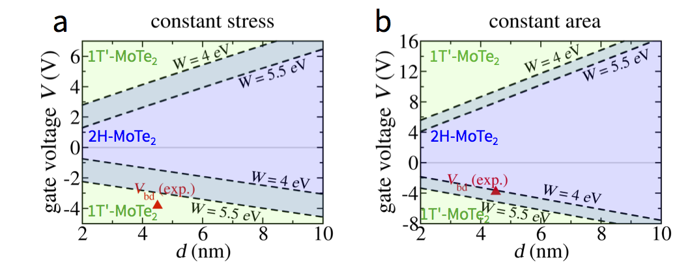
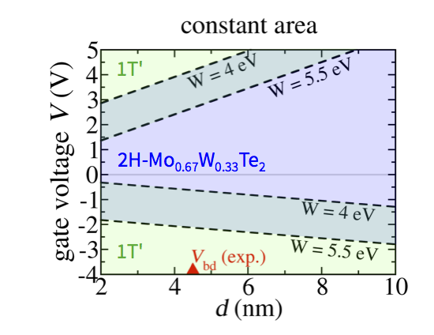

Our work shows that dynamic control of conductivity via atomic structure change in two-dimensional (2D) materials can be achieved by electrostatic gating. Our findings identify a new physical mechanism, not existing in bulk materials, to dynamically control structural phase transitions in 2D materials, enabling potential applications in phase-change electronic devices.
By developing new density functional-based methods, we discover that electrostatic gating device configurations have the potential to drive structural semiconductor-to-semimetal phase transitions in some monolayer transition metal dichalcogenides (TMDs). We show that the semiconductor-to-semimetal phase transition in monolayer MoTe2 can be driven by a gate voltage of several volts with appropriate choice of dielectric.

Phase control of monolayer MoTe
We find that the transition gate voltage can be reduced arbitrarily by alloying, for example, for MoxW1-xTe2 monolayers.

Reducing transition gate voltages with the alloy MoxW1-xTe2.
Our discoveries have exciting potential applications in ultrathin flexible 2D electronic devices. If the kinetics of the transformation are suitable, nonvolatile phase-change memory or neuromorphic computing may be an application. One might expect 2D materials to have energy consumption advantages over bulk materials due to their ultrathin thickness. If the kinetics is sufficiently fast, another potential application may be subthreshold swing reduction in field-effect transistors to overcome the scaling limit of conventional transistors. In addition, the change in the transmittance of light due to the phase transition of 2D materials may be employed in infrared optical switching devices, such as infrared optical shutters and modulators for cameras, window coating and infrared antennas with tunable resonance.
Publication:
Li, Y., Duerloo, K.-A. N., Wauson, K., Reed, E. J., Structural semiconductor-to-semimetal phase transition in two-dimensional materials induced by electrostatic gating. Nature Communications, doi:10.1038/ncomms10671 (2016).
News coverage:
Imagine a "cool" data-storage technology that's just a few atoms thick. Stanford Engineering News, May 4, 2016